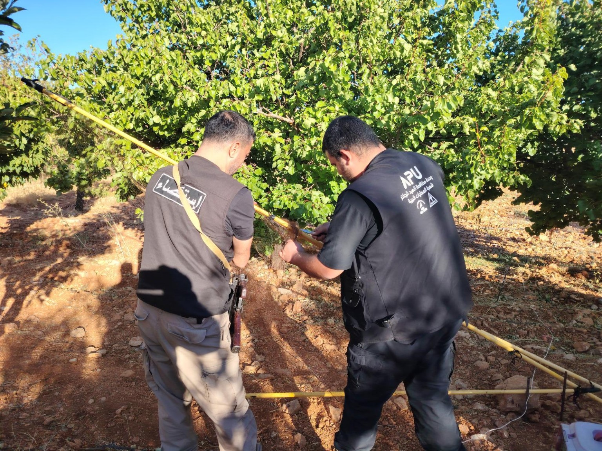
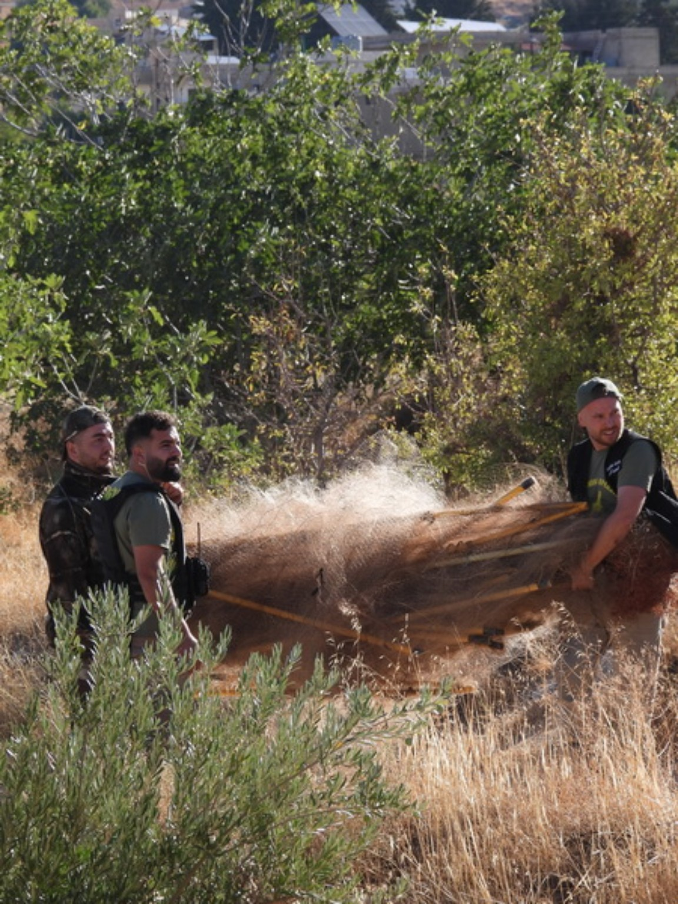
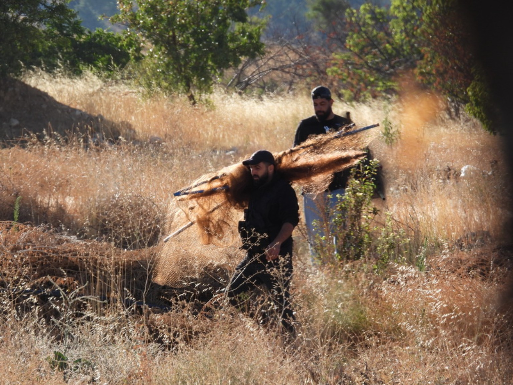
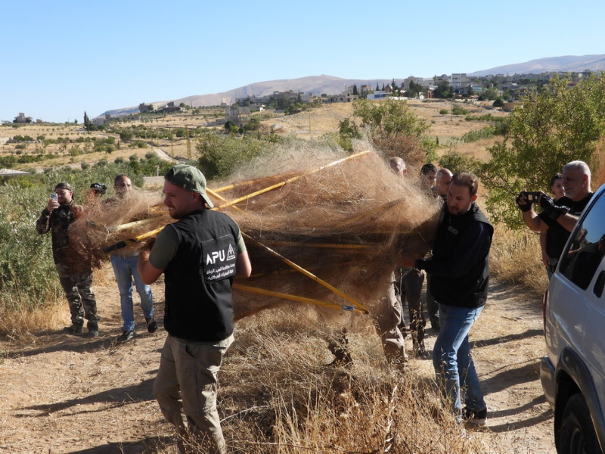
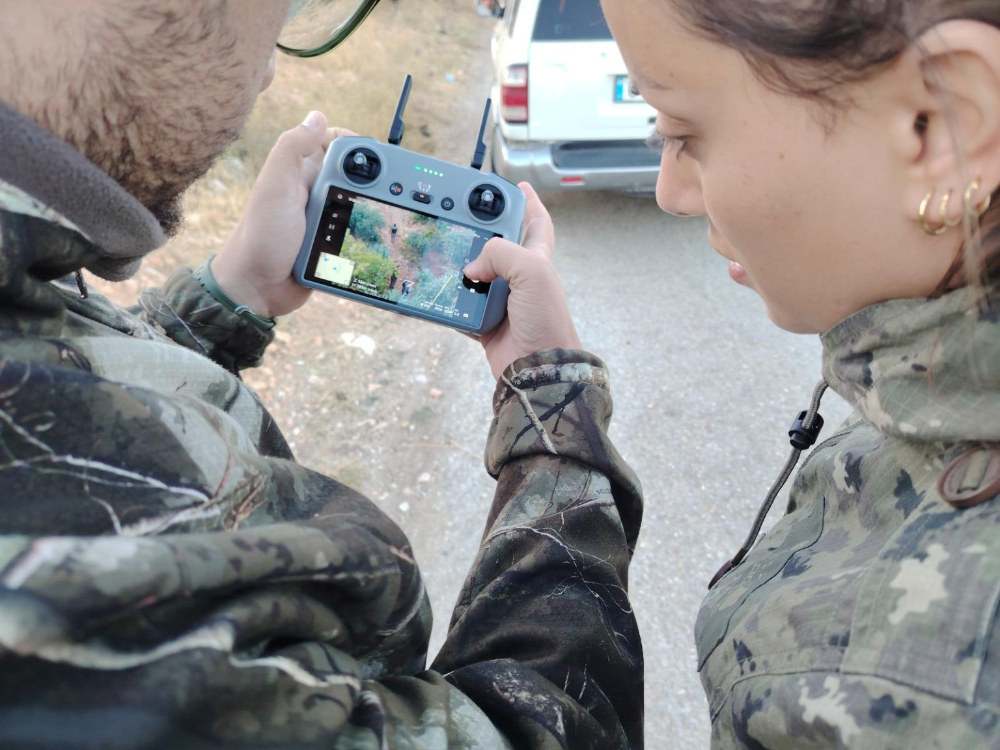
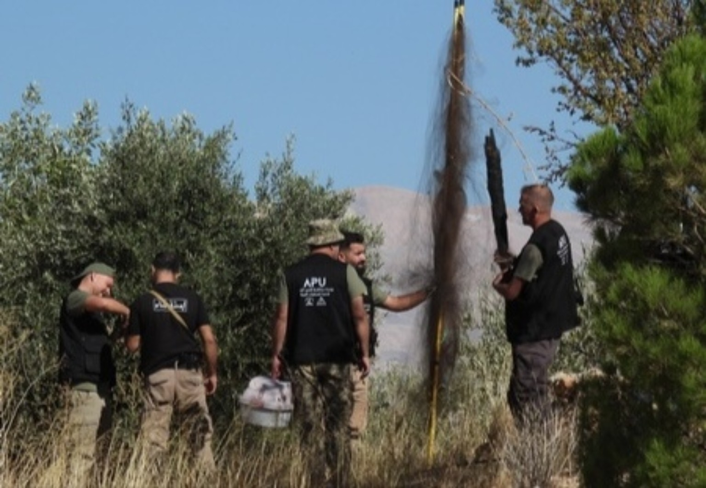

نفّذت مفرزة استقصاء البقاع في وحدة الدرك الإقليمي التابعة لقيادة منطقة البقاع، بالتعاون الميداني والمعلوماتي مع فريق العمليات اللبناني–الدولي المشترك في وحدة مكافحة الصيد الجائر APU (MECSHAP–CABS)، عملية ميدانية استثنائية أسفرت عن إزالة 38,280 مترًا مربعًا من شباك إبادة الصيد المستخدمة في الصيد غير القانوني والإبادة العشوائية للطيور.
وشملت المهمات، التي نُفّذت على مدى عدة أيام، مناطق يونين، اللبوة، عرسال، رأس بعلبك، مشاريع القاع، الكويتية، جبولة، جديدة الفاكهة، جرود نحلة، حيث جرى رصد العديد من مواقع المخالفات والوصول إليها وإزالة الشباك المضبوطة، وكانت المضبوطات تُسلَّم عقب كل مهمة إلى القطاعات المعنية وفق الأصول المعتمدة.
وتميّزت هذه العملية باحترافية عالية وتنسيق ميداني متقن وسرعة في الرصد والتدخل، كما استخدمت مفرزة استقصاء البقاع طائرةً مسيّرة (درون) لمعاينة المناطق ورصد الشباك من الجو وتحديد مواقعها بسرعة ووضوح، ما ساهم في تسريع الوصول إلى نقاط المخالفات وتنفيذ التدخلات الميدانية بكفاءة أكبر.
نسقت المهمة اداريا واعلاميا مع قيادة منطقة البقاع وشعبة العلاقات العامة وغرفة عمليات قيادة الدرك في قوى الأمن الداخلي. كما شارك عناصر من فصيلة رأس بعلبك ميدانيًا في إزالة جزء من الشباك المضبوطة، في إطار التعاون والتنسيق بين الوحدات المعنية.
كما ساهم عدد من الصيادين المستدامين في منطقة البقاع في توفير المعلومات الميدانية المطلوبة لرصد نقاط المخالفات وتحديد مواقع الشباك.
ومن الجدير بالذكر أن هذا التعاون ليس الأول من نوعه، إذ أسفرت عملية مماثلة نُفّذت العام الماضي عن إزالة نحو 8,000 متر مربع من الشباك، وقد اعتُبرت حينها أكبر عملية لإزالة شباك الصيد في لبنان، وكذلك الأكبر في تاريخ منظمة CABS الدولية الممتد لنحو خمسين عامًا.
أما العملية الحالية، التي أسفرت عن إزالة 38,280 مترًا مربعًا من الشباك خلال ثلاثة أيام، فتسجّل رقمًا ميدانيًا استثنائيًا جديدًا، وتؤكد أهمية التعاون بين القوى الأمنية والفرق المتخصصة والصيادين المستدامين في مواجهة الصيد غير القانوني وحماية الطيور والحياة البرية في لبنان.
الحصيلة في البلاغ الرسمي
في بلاغها الصادر في 8 تشرين الأول 2026، أوضحت المديرية العامة لقوى الأمن الداخلي أن الحصيلة الإجمالية للحملة بلغت 38,280 مترًا مربعًا: 20,640 مترًا مربعًا أُزيلت في المرحلة الأولى، و17,640 مترًا مربعًا إضافية أُزيلت خلال ثلاثة أيام. وذكر البلاغ مشاركة فريق APU (MECSHAP–CABS) واستخدام طائرة مسيّرة ومساهمة صيادين مستدامين في توفير المعلومات الميدانية.
بلاغ المديرية العامة لقوى الأمن الداخلي — 8 تشرين الأول 2026






المادة والصور: أدونيس الخطيب، رئيس التحرير / مجلة صيد.